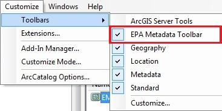
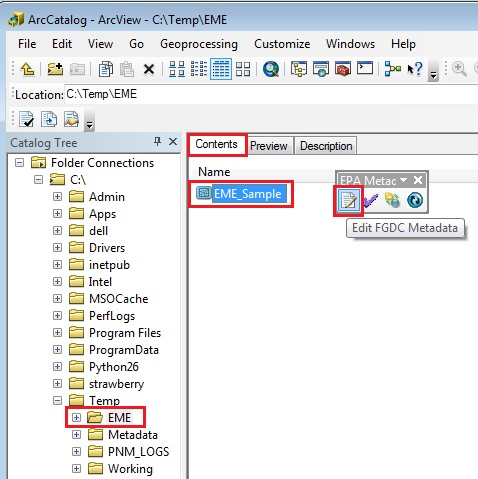

EPA Metadata Editor (EME)
Post-Installation Steps
When EME is initially installed, it can be helpful to take preliminary steps to customize key settings to meet your needs. An overview of post-installation steps is provided below. Settings that are only applicable to the EME ArcGIS Extension are noted with an asterisk (*).
Accessing the EPA Metadata Editor as an ArcGIS Extension
- If you are using the EME as an ArcGIS Extension, then it is accessed from within ArcCatalog. Open ArcCatalog, then open the EPA Metadata Editor Toolbar from the Customize->Toolbars menu.

- Once the EPA Metadata Toolbar is open, navigate to your directory or database of choice in the ArcCatalog table of contents.
- Select your data set or metadata record in the 'Contents' window in ArcCatalog.
- Click on the 'Edit FGDC Metadata' button in the user interface. Please Note: The 'Edit FGDC Metadata' button will only be enabled when you select a directory or geodatabase within the ArcCatalog table of contents, and then select the data set or file of interest in the 'Contents' window.

Accessing the EPA Metadata Editor as a Standalone Tool
If you are using the EME as a standalone application, then go to Start->EPA Metadata Editor to open EME.
Setting up the EME Database
When you first install EME, it can be helpful to set up the EME Database to ensure that the defaults match your specifications. Please see the help section titled 'Customizing the EPA Metadata Editor Database' for more information on configuring the EME database to meet your needs.
Setting up the EPA Synchronizer*
When you first install EME, it can be helpful to configure the EPA Synchronizer to ensure that desired data and metadata synchronization processes are occurring. Please see the help section titled 'Using the EPA Synchronizer' for more information on using and configuring the EPA Synchronizer.
Setting up Validation Results*
When you first install EME, it can be helpful to configure the EPA Validation settings to ensure that validation is performed according to your preferences and that the results are displayed as desired. For more information, please see the help section titled 'Using the EPA Validator'.
* Only applies to EME ArcGIS Extension